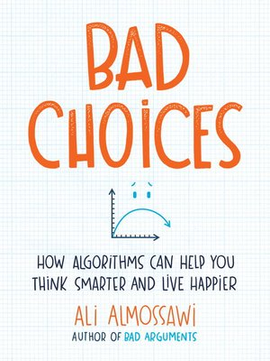

Bad Choices, by Almossawi
Sunday October 11, 2020
I enjoyed Almossawi's illustrated introduction to computational thinking, which is freely available online. I've been thinking about non-fiction(ish) books for kids, and this one could be read by middle-schoolers, I think, and possibly spark interest in learning more. It illustrates the challenges and rewards of telling stories about computer science topics.
Almossawi has one of his distinctive mind maps toward the end of the book. Linearized, the topics in the book look something like this:
- Fundamentals
- Stacks
- Arrays
- Linked lists
- Asymptotic notation
- Worst, average cases
- Searching
- Binary search
- Linear search
- Hash tables
- Sorting
- Library sort
- Priority queues
- Mergesort
- Quicksort
- Insertion sort
- Graphs
- Maze-solving
- Link analysis
- Strings
- Huffman coding
"Note that all the lines in this book are plotted on a log-log scale, which is why the shapes of the lines are the way they are." (page xi)
I would have liked to see this better explained. The lines are never labeled, and I'm not sure why this was intentional.
"The lines in those graphs were intentionally unlabeled." (page 137)
Unless it was for this reason:
"In my experience, any learning environment that encourages students to be fast learners is setting its students up for failure." (page xi)
That's interesting, but I'm not sure it's a good justification. At least, I think it would be good to be explicit, like: "Add your own labels to these," if that's what the reader is supposed to do.
"If you look at human history, you're likely to find that many of the names you recognize belong to people who were educated as apprentices rather than as note takers." (page 3)
The "to learn more" section says this is from "Most Likely to Succeed: Preparing Our Kids for the Innovation Era."
A glitch in the Huffman coding example (starting page 69) is corrected in the errata.
"Interestingly, though, Morse determined the frequency of various letters not by talking to experts or conducting a study or analyzing data, but by counting the number of types in a printer's type box. So the next time a pedant questions your research methods, take heart." (page 72)
"The Wall Street Journal published an article recently about the rise of scrabble champions in Nigeria, and how their winning edge isn't necessarily due to a better vocabulary but rather to the counterintuitive tactic of opting for shorter words." (page 80)
The "to learn more" section references For World’s Newest Scrabble Stars, SHORT Tops SHORTER.
"We tend to interpret new information in a way that fits with what we already believe. It's what computer scientist Alan Kay calls relativizing." (page 84)
This seems sort of interesting, but I don't see a good reference for it.
"Douglas Carl Engelbart, inventor of the computer mouse, has written about the need to not only make the process of completing a set of tasks more efficient, but also the process of questioning whether the tasks are essential to begin with." (page 84)
I would love to find this writing!
"We can't really explain a heap by analogy." (page 120)
"When Feynman was once asked how he developed his legendary ability to solve problems so quickly, he said that it was because he modeled those problems in a multitude of ways, which is to say he looked at them from different perspectives." (page 125)
The "to learn more" section includes references to:
